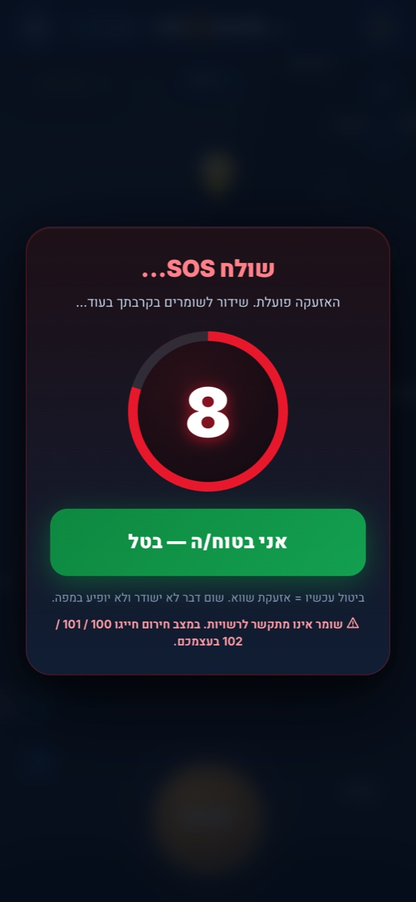
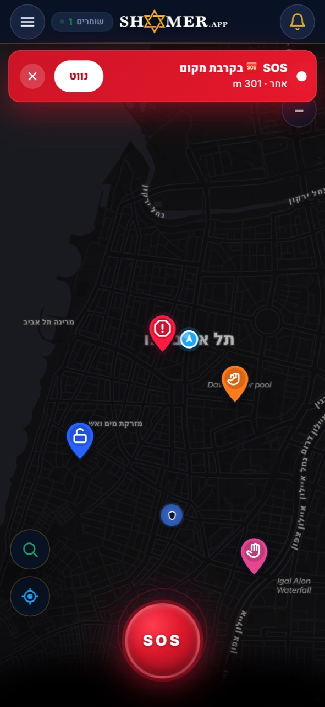
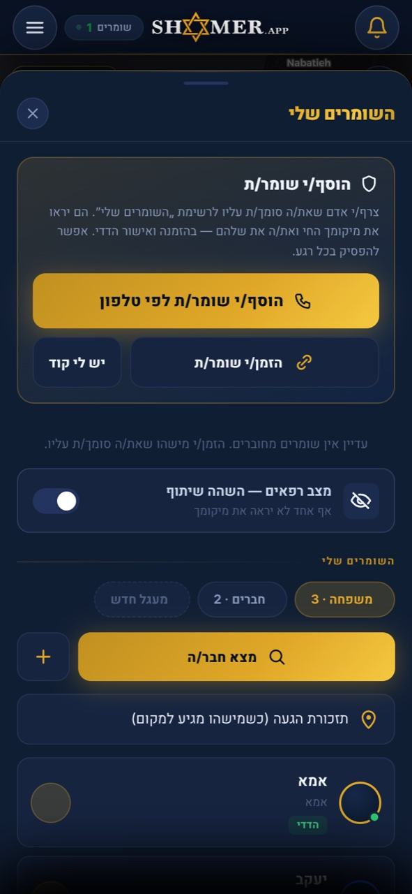

One tap. You're not alone.
אזעקה חזקה. מיקום מדויק. עזרה מהירה — בלחיצה אחת.
בלי חנות, בלי הורדה. מדריך החירום זמין גם ללא רשת. שתף עם השומרים שלך.

בלי חנות, בלי הורדה. נפתח ישירות בדפדפן. מדריך החירום זמין גם ללא רשת.
משפחה, חברים, שכנים. מעגל שמקבל התראה כשצריך.
אזעקה חזקה ומיקום מדויק. השומרים שלך ושומרים פעילים בקרבת מקום מקבלים התראה (בכפוף לחיבור רשת).

צילום מסך אמיתי מהאפליקציה — מיקום בזמן אמת, דיווחי אירועים ושומרים פעילים בקרבת מקום.

הוסיפו מעגל אמון של משפחה וחברים. כשמישהו במעגל שולח SOS — כולם מקבלים התראה.
הליכה לבד, תחבורה, עיר. לחיצה אחת — השומרים שלך ושומרים בקרבת מקום מקבלים התראה.
מפה חיה של אירועים ושומרים פעילים בקרבת מקום. דיווח מהיר ועזרה הדדית בין שכנים.
בלי חנות אפליקציות, בלי הורדה. מדריך החירום זמין גם ללא רשת. ככל שיותר שכנים מצטרפים — כולם בטוחים יותר.
לחץ "הוסף למסך הבית" אחרי הפתיחה.